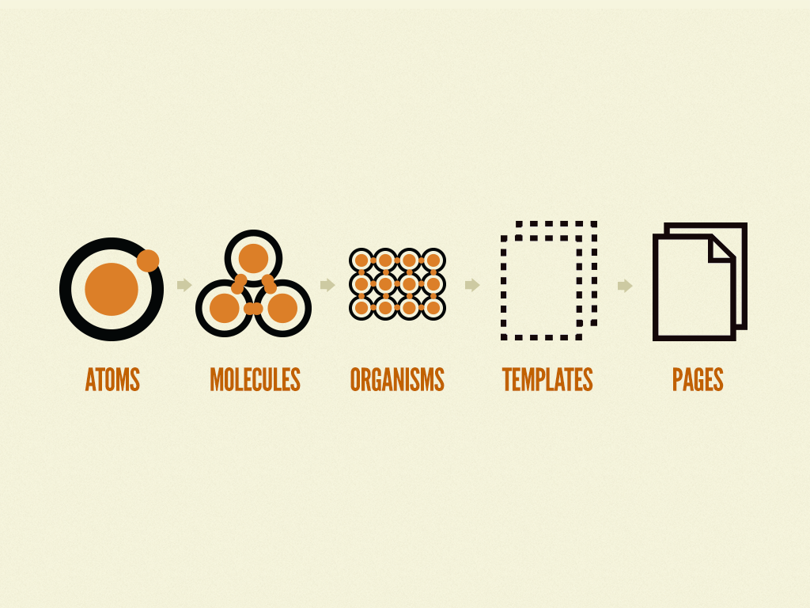
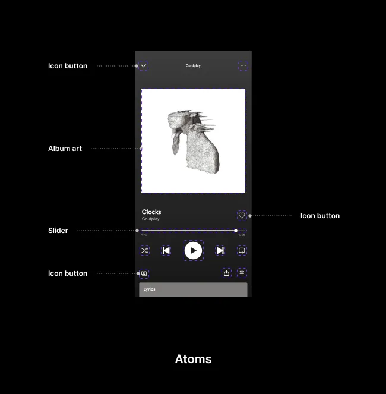
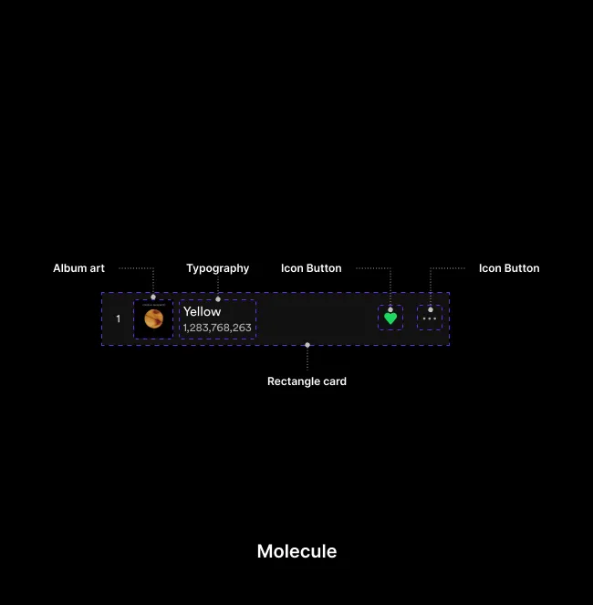
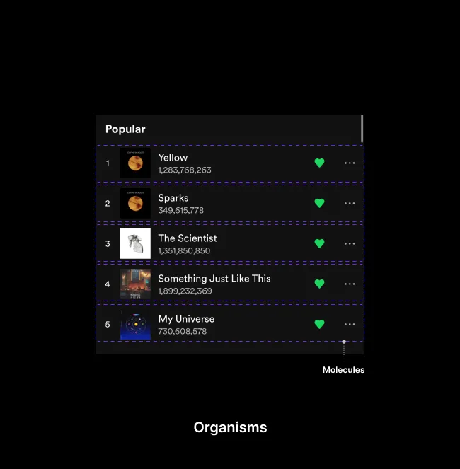
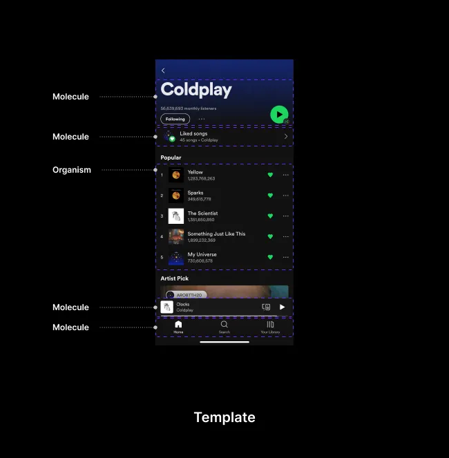
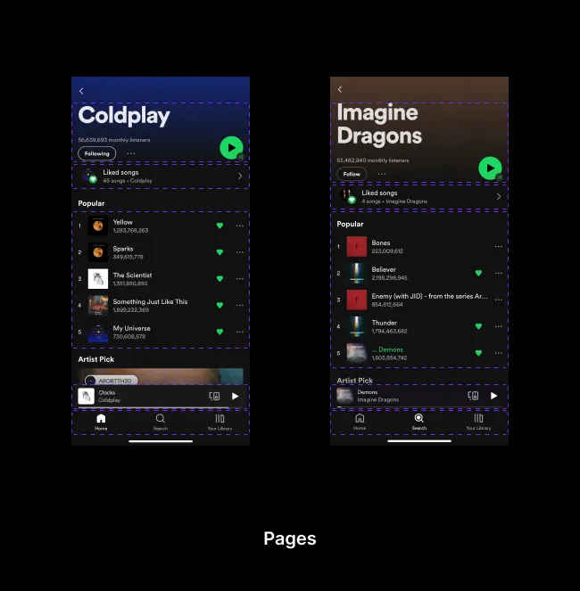

A design system is a complete set of standards intended to manage design at scale using reusable components and patterns.
Atomic design is not a linear process, but rather a mental model to help us think of our user interfaces as both a cohesive whole and a collection of parts at the same time. Each of the five stages plays a key role in the hierarchy of our interface design systems. Let’s dive into each stage in a bit more detail.

https://atomicdesign.bradfrost.com/chapter-2/
Atoms

Molecules

Organisms

Template

Pages

Finished this lecture?